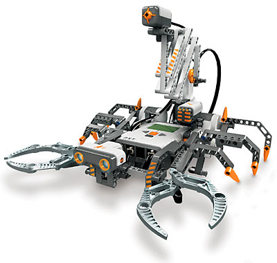

Robotický semináø pro støední školu
Vítejte na webový stránkách, které slouží jako podpora pro výuku
robotického semináøe!
V hlavním menu máte k dispozici dvì položky.
První položka slouží pro pøístup na stránku, kde najdete osnovu jednotlivých semináøù a máte možnost
si zde stáhnout prezentaci pro pøíslušný semináø.
Hlavní menu:

Jaroslav Marek
email: marekj18@fel.cvut.cz